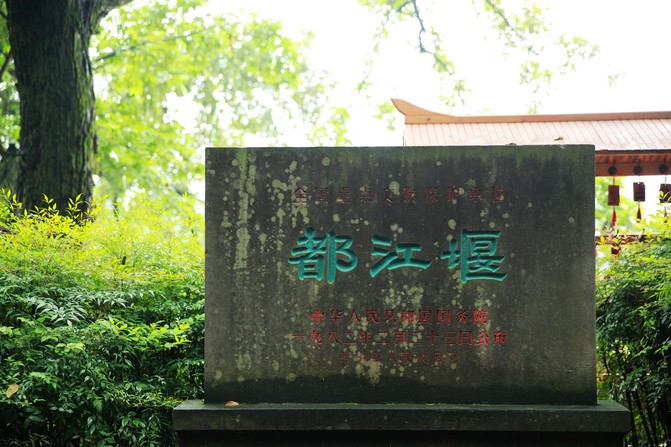
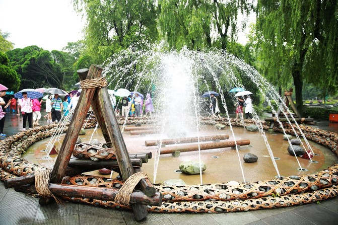
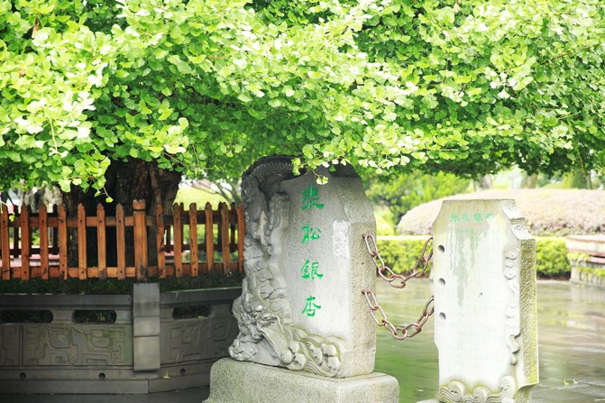
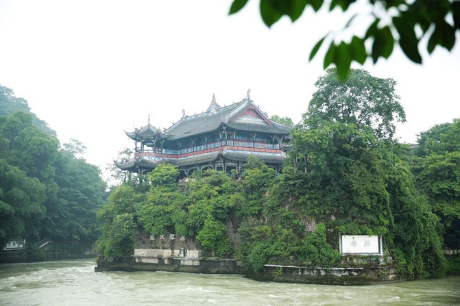
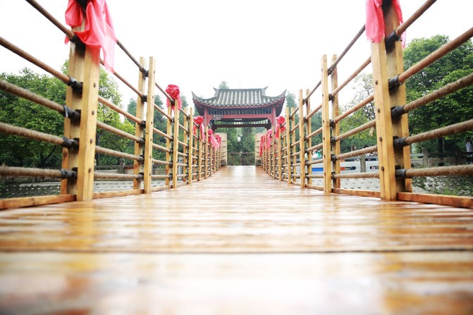

Every day the city was faint, and the summer solstice was all mountain climbing.
Because of the water of the river, he stole half a day.
[Qingxi garden]
The memorial archway, which has passed through the entrance of Dujiangyan scenic spot, has entered a "Suzhou
garden" in West China. The gentle and elegant Sichuan gardens, one of the guests who come from far away, is
a welcome bedding for the upcoming journey. Our Sichuan is also a soft sister in the south of the Yangtze
River. You want a little bridge water, a green tree temple a lot, but you can not look down on this "soft
sister" in the soft and strong.
[lie iron]. Little creativity and great wisdom
If you come to Dujiangyan, you want to find out how Li Bing and his father and his son took the fluid
mechanics two thousand years ago. By the way, pick up a knowledge principle that physics is about to forget
in high school. The "lying iron", which is not far from the door, is like a small teacher, quietly opening
the lecture and saying "the lesson" to you. 
Several columns of water are ejected from the ground, forming a dome shaped water screen. If there is a sunny day, I think the water screen will reflect the colorful sunlight and gorgeous. Under the water screen, four columns of iron lie on the side of the river, as the depth mark of Neijiang's annual repair beach, meaning to dig here - you can't dig down any more.
[Weir Gong Dao]. History is beckoning
Weir Road is a long but exquisite road. The 12
sides of the left and right sides cast the weirs of the two weirs, and the 248 leading faucets spit out the
spring water for a moment.
Thousands of spring comes to autumn, Zhang Song ginkgo will still be on time in autumn to become a golden umbrella, and fall in the autumn of autumn. Walking today, remembering the past, we can only sigh "odd ah, wonderful" again and again.
[Tianfu Old Tea House]. Give me a time of tea
On the left side of the lying iron and Weir Road, there is another elegant tea house. This pavilion,
surrounded by bonsai, is a resting place for this trip. People in Sichuan love to drink tea and walk here.
Even if it is not the authentic Sichuan people, it is hard not to be attracted by this simple and elegant
tea stall for tea.
At the end of the play, the tea in the cup still has more than the temperature, you lift the lid of the bowl, see the air a little bit of water vapour off the cup mouth, just feel that time seems to walk more slowly, slow...
[volong Guan].
Fu Long Guan is standing on the top of the ancient garden. The three sides are cliffs and precipice, which
are magnificent. This is for later generations to commemorate Li Bing's father and son's Dragon lock. The
three weight of the palace, a step by step, and the stone statue of Li Bing and the people in the Han
Dynasty and the ancient objects of the Han Dynasty, as the direct beneficiaries of the hydraulic feats of
the two thousand years ago, I have long been respectful and earnest to pay homage to them.
It is especially recommended that you visit the post Hall of Fulong Guan, which is the best viewing platform overlooking the bottle mouth. How can a dragon give in under a pillar? If you are a brave warrior, you will surely dance and dance like a dragon when you see you.
[vase mouth]
The Neijiang water from the mouth of the fish has no calm. It is still proud to be proud of its unquagious
temper and wild nature. Li Bing, using the scientific principle of "heat expansion and contraction", drilled
a total water intake of more than 40 meters long and more than 20 meters wide in Neijiang, which skillfully
controlled the unyielding dragon. From then on, the river water flowing into the Chengdu plain became plain
through the water system of the
cobweb.
[Fish mouth].Diverting masterpiece
The sightseeing bus has not arrived yet, and its ears are already booming. The spectacular fish mouth is
really something you need to see with your own eyes. The water from the upper reaches of the Minjiang River
reaches the mouth of the mouth of the fish mouth, which is automatically divided into two schools of water.
One is used as Neijiang, used for irrigation, and a row of rivers for flood discharge.
"An Lan Bridge (husband and wife bridge)" recommendation
The front of the fish mouth is
across the bridge, also known as the couple bridge. During the Qing Jiaqing years, he's husband and wife
built the streets of the two sides. Now the bridge is quite romantic.
The 261 meter length of the bridge is built only by wood and chain, and the sides of the cable are draped with red and red silk and satin, walking on, shaking, as if to walk with each other with their own half. The two people who have witnessed the friendship with the surging river may have a deeper love at the moment when they reach the other shore.
After the bridge, there is a more romantic concentric lock wall waiting for lovers to complete. The everlasting pledge must be fermented among mountains and rivers to sublime it more indestructible.
The floating clouds are dyed yellow by the sun, and the birdsong is disturbed by the bell and chime. At this time, along the concentric lock wall, I saw that the corners of the eaves of the two kings temple were visible in the tall trees. The eaves, the birds and the setting sun formed a diagonal on the instant that I pressed the shutter, which was the peak of my trip. After visiting the two kings temple, please follow the East Song Mao road and return to the entrance of the scenic area.
The entrance to the scenic area, the two months' Munich beer festival has just begun. The carnival of gourmet and beautiful wine, beauty and the feast of the song, please enjoy the pleasure here and enjoy the wine and drink with the revelry.
If you say there's a place in the world
The ability to turn the turbulent River into a spring water in a moment
Turning dry soil into fertile farmland
Turn the noisy city into a summer resort
Turn the sun into a clean wind
Turn the heart into a plume of smoke
It is impossible to make it possible
I will not yell once again that there is no such place.。
Dujiang Dam！ It's my answer. Thank you for meeting me better than a dream, and blowing a cool breeze for my next summer.